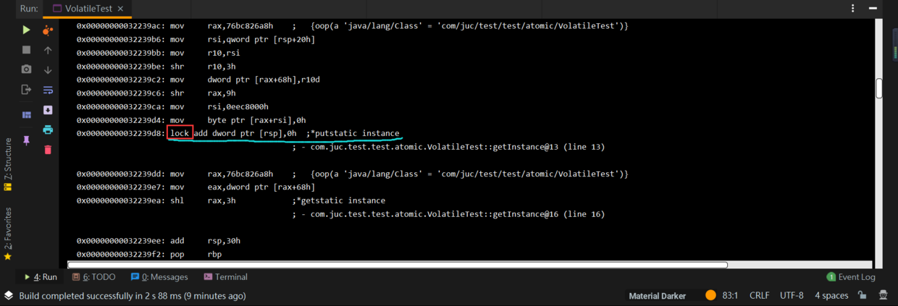
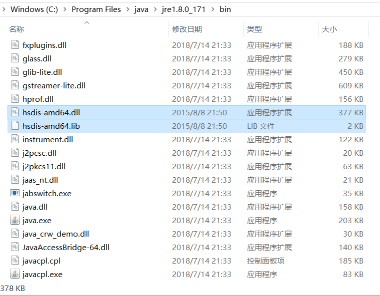
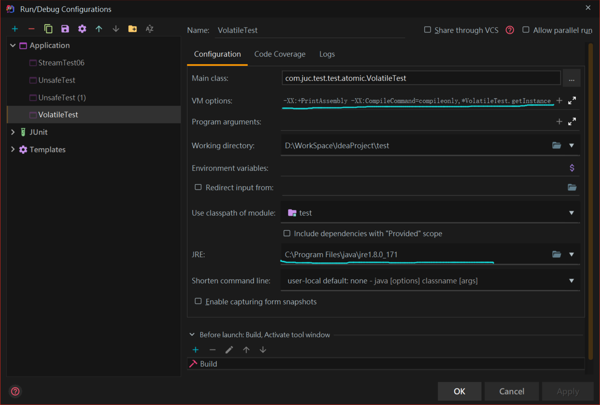

当共享变量被声明为volatile后，对这个变量的读/写操作都会很特别，下面我们就揭开volatile的神秘面纱。
一个volatile变量自身具有以下三个特性：
可见性：即当一个线程修改了声明为volatile变量的值，新值对于其他要读该变量的线程来说是立即可见的。而普通变量是不能做到这一点的，普通变量的值在线程间传递需要通过主内存来完成。
有序性：volatile变量的所谓有序性也就是被声明为volatile的变量的临界区代码的执行是有顺序的，即禁止指令重排序。
受限原子性：这里volatile变量的原子性与synchronized的原子性是不同的，synchronized的原子性是指只要声明为synchronized的方法或代码块儿在执行上就是原子操作的。而volatile是不修饰方法或代码块儿的，它用来修饰变量，对于单个volatile变量的读/写操作都具有原子性，但类似于volatile++这种复合操作不具有原子性。所以volatile的原子性是受限制的。并且在多线程环境中，volatile并不能保证原子性。
volatile写的内存语义：当写线程写一个volatile变量时，JMM会把该线程对应的本地内存中的共享变量值刷新到主内存。
volatile读的内存语义：当读线程读一个volatile变量时，JMM会把该线程对应的本地内存置为无效，线程接下来将从主内存读取共享变量。
在介绍volatile语义实现原理之前，我们先来看两个与CPU相关的专业术语：
volatile可见性的内存语义是如何实现的呢？下面我们看一段代码，并将代码生成的处理器的汇编指令打印出来（关于如何打印汇编指令，我会在文章末尾附上），看下对volatile变量进行写操作时，CPU会做什么事情：
public class VolatileTest {
private static volatile VolatileTest instance = null;
private VolatileTest(){}
public static VolatileTest getInstance(){
if(instance == null){
instance = new VolatileTest();
}
return instance;
}
public static void main(String[] args) {
VolatileTest.getInstance();
}
}
以上的代码是一个我们非常熟悉的在多线程环境中不能保证线程安全的单例模式代码，这段代码中特殊的地方是，我将实例变量instance加上了volatile修饰，下面看打印的汇编指令：

上面截图中，我们看到我划线的一行的末尾有一句汇编注释：putstatic instance，了解JVM 字节码指令的小伙伴都知道，putstatic的含义是给一个静态变量设置值，在上述代码中也就是给静态变量instance赋值，对应代码：instance = new VolatileTest();在getInstance方法中为instance实例化，因为instance加了volatile修饰，所以给静态变量instance设置值也是在写一个volatile变量。
看到上述有汇编指令，也有字节码指令，大家会不会混淆这两种指令，这里我指明一下字节码指令和汇编指令的区别：
我们都知道java是一种跨平台的语言，那么java是如何实现这种平台无关性的呢？这就需要我们了解JVM和java的字节码文件。这里我们需要有一点共识，就是任何一门编程语言都需要转换为与平台相关的汇编指令才能够最终被硬件执行，比如C和C++都将我们的源代码直接编译成与CPU相关的汇编指令给CPU执行。 不同系列的CPU的体系架构不同，所以它们的汇编指令也有不同，比如X86架构的CPU对应于X86汇编指令，arm架构的CPU对应于arm汇编指令。如果将程序源代码直接编译成与硬件相关的底层汇编指令，那么程序的跨平台性也就大打折扣，但执行性能相对较高。为了实现平台无关性，java的编译器javac并不是将java的源程序直接编译成与平台相关的汇编指令，而是编译成一种中间语言，即java的class字节码文件。字节码文件，顾名思义存的就是字节码，即一个一个的字节。有打开过java字节码文件研读过的小伙伴可能会发现，字节码文件里面存的并不是二进制，而是十六进制，这是因为二进制太长了，一个字节要由8位二进制组成。所以用十六进制标表示，两个十六进制就可以表示一个字节。java源码编译后的字节码文件是不能够直接被CPU执行的，那么该如何执行呢？答案是JVM，为了让java程序能够在不同的平台上执行，java官方提供了针对于各个平台的java虚拟机，JVM运行于硬件层之上，屏蔽各种平台的差异性。javac编译后的字节码文件统一由JVM来加载，最后再转化成与硬件相关的机器指令被CPU执行。知道了通过JVM来加载字节码文件，那么还有一个问题，就是JVM如何将字节码中的每个字节和我们写的java源代码相关联，也就是JVM如何知道我们写的java源代码对应于class文件中的哪段十六进制，这段十六进制是干什么的，执行了什么功能？并且一大堆的十六进制，我们也看不懂啊。所以这就需要定义一个JVM层面的规范，在JVM层面抽象出一些我们能够认识的指令助记符，这些指令助记符就是java的字节码指令。
再看上面的截图，当写instance这个volatile变量时，发现add前面加个一个lock指令，我在截图中框了出来，如何不加volatile修饰，是没有lock的。
lock指令在多核处理器下会引发下面的事件：
将当前处理器的缓存行的数据写回到系统内存，同时使其他CPU里缓存了该内存地址的数据置为无效。
为了提高处理速度，处理器一般不直接和内存通信，而是先将系统内存的数据读到内部缓存后再进行操作，但操作完成后并不知道处理器何时将缓存数据写回到内存。但如果对加了volatile修饰的变量进行写操作，JVM就会向处理器发送一条lock前缀的指令，将这个变量在缓存行的数据写回到系统内存。这时只是写回到系统内存，但其他处理器的缓存行中的数据还是旧的，要使其他处理器缓存行的数据也是新写回的系统内存的数据，就需要实现缓存一致性协议。即在一个处理器将自己缓存行的数据写回到系统内存后，其他的每个处理器就会通过嗅探在总线上传播的数据来检查自己缓存的数据是否已过期，当处理器发现自己缓存行对应的内存地址的数据被修改后，就会将自己缓存行缓存的数据设置为无效，当处理器要对这个数据进行修改操作的时候，会重新从系统内存中把数据读取到自己的缓存行，重新缓存。
总结下：volatile可见性的实现就是借助了CPU的lock指令，通过在写volatile的机器指令前加上lock前缀，使写volatile具有以下两个原则：
volatile有序性的保证就是通过禁止指令重排序来实现的。指令重排序包括编译器和处理器重排序，JMM会分别限制这两种指令重排序。
那么禁止指令重排序又是如何实现的呢？答案是加内存屏障。JMM为volatile加内存屏障有以下4种情况：
上述内存屏障的插入策略是非常保守的，比如一个volatile的写操作后面需要加上StoreStore和StoreLoad屏障，但这个写volatile后面可能并没有读操作，因此理论上只加上StoreStore屏障就可以，的确，有的处理器就是这么做的。但JMM这种保守的内存屏障插入策略能够保证在任意的处理器平台，volatile变量都是有序的。
在JSR-133之前的旧的java内存模型中，虽然不允许对volatile变量之间的操作进行重排序，但允许对volatile变量与普通变量之间进行重排序。比如内存屏障前面是一个写volatile变量的操作，内存屏障后面的操作是一个写普通变量的操作，即使这两个写操作可能会破坏volatile内存语义，但JMM是允许这两个操作进行重排序的。
在JSR-133以及后面的新的java内存模型中，增强了volatile的内存语义。只要volatile变量与普通变量之间的重排序可能会破坏volatile的内存语义，这种重排序就会被编译器重排序规则和处理器内存屏障出入策略禁止。
工具包下载地址：链接：https://pan.baidu.com/s/11yRnsOHca5EVRfE9gAuVxA
提取码：gn8z
将下载的工具包解压，复制到jdk安装目录的jre路径下的bin目录中，如图：

然后配置idea，在 VM options 选项中输入：-server -Xcomp -XX:+UnlockDiagnosticVMOptions -XX:+PrintAssembly -XX:CompileCommand=compileonly,*类名.方法名
JRE选项选择已放入工具包的jre路径。
下图是我的idea配置：

以上配置好后运行就可以打印汇编指令了。